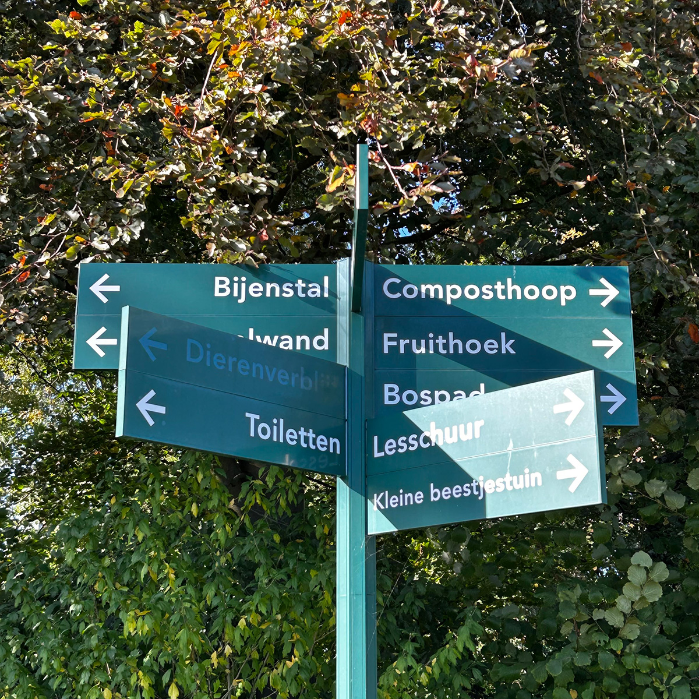
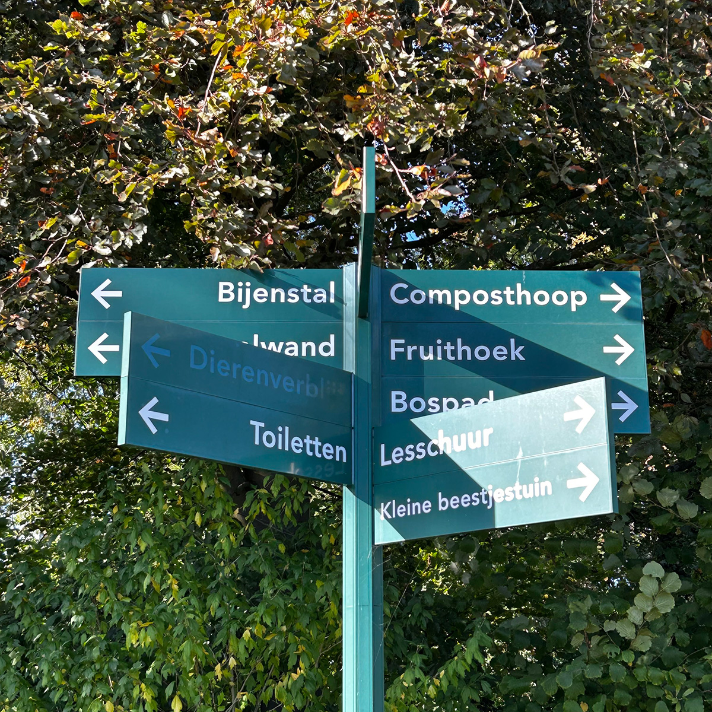

De Kalff Schooltuin
In de Kalff Schooltuin is genoeg te doen. Het terrein bestaat uit verschillende onderdelen, op wegwijzers in de tuin staat aangegeven waar je de onderdelen kan vinden. De tuin heeft een Fruithoek hier staan allerlei bomen en struiken waar fruit aangroeit. Ze hebben een perzikboom, een appelboom, een perenboom, bramenstruik, frambozenstruik en nog veel meer! Naast de fruithoek is een ingang van een bospad dat door de gehele tuin loopt, hier kunnen zowel de kinderen als bezoekers een wandeling in maken.
Naast het bospad is een kleine beestjes tuin. Hier is een huisje gemaakt waar allemaal verschillende insecten en andere diertjes op hun gemak kunnen leven. Voor de bijen daarentegen is er een aparte bijenstal hier staan bijenkasten die worden verzorgd door de imker die af en toe langs komt in de schooltuin. Maar het aller belangrijkste onderdeel van de schooltuin is natuurlijk de moestuin waarin de kinderen hun eigen zaadjes planten en groenten kunnen oogsten.
 


Op de eigen aangewezen plekjes die de leerlingen krijgen mogen zij allemaal hun eigen zaadjes planten, verzorgen, oogsten en wieden. In hun tuintjes staan bijvoorbeeld bloemen, peperplanten en aardbeien. Kinderen leren door te voelen en te doen ze mogen buiten werken en leren ook theorie.
Door zelf bezig te zijn met de natuur leer je er ook beter mee om te gaan, dat is een van de grote voordelen van de schooltuin. Kinderen krijgen gelijk meer te weten over duurzaamheid en hoe belangrijk de natuur is. Alles wat in de schooltuin groeit is biologisch er wordt namelijk ook geen gebruik gemaakt van pesticiden. Onkruid wordt daar namelijk ook teruggedrongen met het zelf gemaakte compost.